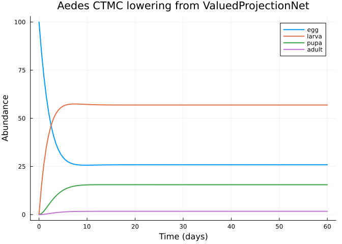

Continuous-Time Stage Dynamics: Mosquito Development as a Generator
Simon Frost
Overview
The case studies in vignettes 06–10 lower categorical projection nets into discrete-time matrix (MPM) or integral (IPM) models. The categorical toolkit also supports continuous-time finite-state lowering via FiniteStateDynamicsTarget, which turns a net with concrete stage-transition rates into a generator problem for the FiniteStatePopulationDynamics backend.
This vignette demonstrates that path using a four-stage mosquito life cycle (Aedes aegypti — egg → larva → pupa → adult) at a reference temperature of 27 °C. The development rates come from standard temperature-dependent models of culicid development and are handled here as rates (per-day hazards), not per-time-step transition probabilities. We show that the same categorical specification can be lowered to either a discrete MPM or a continuous-time finite-state chain, and that the two agree in the appropriate limit.
The vignette covers:
- Express the life cycle as a
ValuedProjectionNetwith rate values - Lower to
FiniteStateDynamicsTargetto obtain a generator ODE - Simulate via the FiniteStatePopulationDynamics solver
- Compare the continuous-time solution to a matrix-exponential reference
- Lower the same net to
MPMTargetfor a side-by-side discrete benchmark
Setup
using CategoricalPopulationDynamics
using CategoricalPopulationDynamics: ⊕, ⊘
using FiniteStatePopulationDynamics
using MatrixProjectionModels
using StructuredPopulationCore: lambda
using LinearAlgebra
using Plots
const CPD = CategoricalPopulationDynamics
const FSPD = FiniteStatePopulationDynamics
const MPM = MatrixProjectionModelsPrecompiling packages...
4035.5 ms ✓ QuartoNotebookWorkerPlotsExt (serial)
1 dependency successfully precompiled in 4 seconds
MatrixProjectionModelsLife-cycle rates
Mosquito development and adult survival are often summarised by stage-specific daily rates. We adopt a widely-used set of reference values for Ae. aegypti at 27 °C (Otero et al. 2006; Focks et al. 1993 — see references.bib):
| Transition | Rate (day⁻¹) | Symbol |
|---|---|---|
| egg → larva | 0.33 | egg_hatch |
| larva → pupa | 0.15 | larva_develop |
| pupa → adult | 0.55 | pupa_emerge |
| egg mortality | 0.01 | absorbed into E/L |
| larva mortality | 0.05 | absorbed into L/P |
| pupa mortality | 0.05 | absorbed into P/A |
| adult mortality | 0.08 | adult_death |
For simplicity we treat mortality separately from progression, and we place a single fecundity rate on the adult → egg edge (5 eggs per female per day).
stages = [:egg, :larva, :pupa, :adult]
progression = [
(:egg => :larva) => 0.33,
(:larva => :pupa) => 0.15,
(:pupa => :adult) => 0.55,
]
mortality = [
(:egg => :egg) => -0.01,
(:larva => :larva) => -0.05,
(:pupa => :pupa) => -0.05,
(:adult => :adult) => -0.08,
]
reproduction = [
(:adult => :egg) => 5.0,
]
vnet = ValuedProjectionNet(stages,
:progression => progression,
:mortality => mortality,
:reproduction => reproduction)ValuedProjectionNet{Float64}(CategoricalPopulationDynamics.LabelledProjectionNet:
S = 1:1
T = 1:3
Src = 1:3
Tgt = 1:3
Name = 1:0
src_t : Src → T = [1, 2, 3]
src_s : Src → S = [1, 1, 1]
tgt_t : Tgt → T = [1, 2, 3]
tgt_s : Tgt → S = [1, 1, 1]
sname : S → Name = [:stage]
tname : T → Name = [:progression, :mortality, :reproduction], [:egg, :larva, :pupa, :adult], Dict(:mortality => [(:egg => :egg) => -0.01, (:larva => :larva) => -0.05, (:pupa => :pupa) => -0.05, (:adult => :adult) => -0.08], :progression => [(:egg => :larva) => 0.33, (:larva => :pupa) => 0.15, (:pupa => :adult) => 0.55], :reproduction => [(:adult => :egg) => 5.0]))We can inspect the aggregated transition matrix. Each cell records the net rate at which population leaves the source stage (columns) and arrives in the target stage (rows), before we form the generator.
Q_raw = to_matrix(vnet)
display(Q_raw)4×4 Matrix{Float64}:
-0.01 0.0 0.0 5.0
0.33 -0.05 0.0 0.0
0.0 0.15 -0.05 0.0
0.0 0.0 0.55 -0.08Because the raw matrix is not a proper generator (columns do not sum to zero), we supply a generator_transform that enforces column-sum = 0. This is the standard way to convert a rate table into a CTMC generator.
generator_transform = G -> begin
G = Matrix(G)
G .- Diagonal(vec(sum(G; dims = 1)))
end#2 (generic function with 1 method)Lower to a finite-state generator problem
The categorical specification and the target together produce a FiniteStateGeneratorProblem — a structured ODE du/dt = Q u wrapped with state metadata.
target = FiniteStateDynamicsTarget(;
domain = DiscreteProjectionDomain(stages),
u0 = [100.0, 0.0, 0.0, 0.0], # start with 100 eggs
tspan = (0.0, 60.0),
generator_transform = generator_transform,
)
prob = lower(vnet, target)
@show typeof(prob)
@show prob.domain.labels
@show prob.tspantypeof(prob) = FiniteStatePopulationDynamics.FiniteStateGeneratorProblem{FiniteStatePopulationDynamics.SimpleFiniteStateStructure, Matrix{Float64}, StructuredPopulationCore.DiscreteDomain, Vector{Float64}, Float64, Nothing, Nothing, Nothing}
prob.domain.labels = [:egg, :larva, :pupa, :adult]
prob.tspan = (0.0, 60.0)
(0.0, 60.0)Inspect the generator
Q = prob.generator
display(Q)
@show round.(sum(Q; dims = 1), digits = 10) # each column should sum to 0round.(sum(Q; dims = 1), digits = 10) = [0.0 0.0 0.0 0.0]
4×4 Matrix{Float64}:
-0.33 0.0 0.0 5.0
0.33 -0.15 0.0 0.0
0.0 0.15 -0.55 0.0
0.0 0.0 0.55 -5.0
1×4 Matrix{Float64}:
0.0 0.0 0.0 0.0Simulate the ODE
FiniteStatePopulationDynamics exposes the problem via to_ode_problem.
using OrdinaryDiffEq
odeprob = FSPD.to_ode_problem(prob)
sol = OrdinaryDiffEq.solve(odeprob, Tsit5(); saveat = 0.5)
t_grid = sol.t
u_grid = reduce(hcat, sol.u)'121×4 adjoint(::Matrix{Float64}) with eltype Float64:
100.0 0.0 0.0 0.0
84.8094 14.6398 0.521593 0.0291927
72.0915 26.0088 1.76202 0.137625
61.6269 34.7191 3.35543 0.298568
53.1562 41.3007 5.06123 0.481916
46.4021 46.2019 6.72861 0.667391
41.0924 49.7951 8.26979 0.842659
36.9751 52.3837 9.64017 1.00098
33.8257 54.2115 10.8235 1.13936
31.4497 55.4712 11.8218 1.25732
⋮
25.8672 56.9063 15.5199 1.70661
25.8657 56.9064 15.5199 1.70792
25.8662 56.9064 15.5199 1.70749
25.8676 56.9063 15.5199 1.70622
25.8663 56.9064 15.5199 1.70739
25.8657 56.9064 15.5199 1.70796
25.867 56.9063 15.5199 1.70671
25.8671 56.9063 15.5199 1.70665
25.8667 56.9064 15.5199 1.70704plot(t_grid, u_grid;
xlabel = "Time (days)",
ylabel = "Abundance",
title = "Aedes CTMC lowering from ValuedProjectionNet",
label = reshape(String.(stages), 1, :),
linewidth = 2)
Matrix-exponential sanity check
Because the generator is time-homogeneous, u(t) = exp(Q t) u(0). We compare the solver trajectory to the exact matrix exponential at a selected time point.
u_exact_30 = exp(Matrix(Q) .* 30.0) * prob.u0
u_solver_30 = sol(30.0)
@show round.(u_exact_30; digits = 6)
@show round.(u_solver_30; digits = 6)
@show isapprox(u_exact_30, u_solver_30; atol = 1e-6)round.(u_exact_30; digits = 6) = [25.866543, 56.906357, 15.51991, 1.70719]
round.(u_solver_30; digits = 6) = [25.866716, 56.906345, 15.519911, 1.707029]
isapprox(u_exact_30, u_solver_30; atol = 1.0e-6) = false
falseCompare with a discrete-time MPM lowering
To show that the categorical specification travels between backends, we lower the same ValuedProjectionNet to MPMTarget. Here the values are reinterpreted as per-timestep transitions, so this MPM is not meant to be numerically identical to the CTMC — it corresponds to a coarse Euler step of the same generator.
mpm = lower(vnet, MPMTarget())
@show size(mpm)
@show mpm.stage_names
@show round(lambda(mpm); digits = 6)size(mpm) = (4, 4)
mpm.stage_names = [:egg, :larva, :pupa, :adult]
round(lambda(mpm); digits = 6) = 0.560427
0.560427We recover the generator from the MPM matrix (A - I under a unit time step) and verify it matches the FSPD generator up to a column-sum correction — the categorical framework is backend-agnostic; it is the target that determines the numerical semantics.
A = Matrix(mpm)
euler_generator = A - I
@show round.(euler_generator; digits = 6)round.(euler_generator; digits = 6) = [-1.01 0.0 0.0 5.0; 0.33 -1.05 0.0 0.0; 0.0 0.15 -1.05 0.0; 0.0 0.0 0.55 -1.08]
4×4 Matrix{Float64}:
-1.01 0.0 0.0 5.0
0.33 -1.05 0.0 0.0
0.0 0.15 -1.05 0.0
0.0 0.0 0.55 -1.08Summary
ValuedProjectionNet+FiniteStateDynamicsTarget+loweris the continuous-time analogue of theMPMTargetpath already covered by vignette 08.- The lowering produces a
FiniteStateGeneratorProblemthat plugs directly intoOrdinaryDiffEqviato_ode_problem, enabling adaptive CTMC simulation alongside the matrix-exponential ground truth. - The same categorical specification can be lowered to MPM or CTMC, and both interpretations live in a single schema — choosing the target chooses the dynamical semantics.
This vignette exercises the CategoricalPopulationDynamicsFiniteStatePopulationDynamicsExt extension and closes the coverage gap for FiniteStateDynamicsTarget.